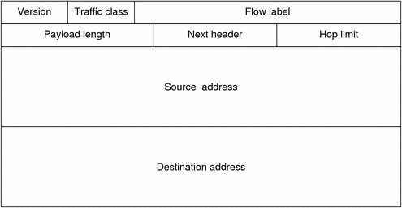
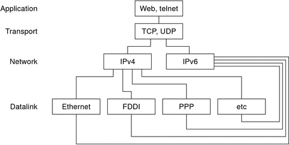

Previous
Previous
IPv6 Packet Header Format
The IPv6 protocol defines a set of headers, including the basic IPv6 header and the IPv6 extension headers. The following figure shows the fields that appear in the IPv6 header and the order in which the fields appear.
Figure 11-3 IPv6 Basic Header Format
The following list describes the function of each header field.
Version - 4-bit version number of Internet Protocol = 6.
Traffic class - 8-bit traffic class field.
Flow label - 20-bit field.
Payload length - 16-bit unsigned integer, which is the rest of the packet that follows the IPv6 header, in octets.
Next header - 8-bit selector. Identifies the type of header that immediately follows the IPv6 header. Uses the same values as the IPv4 protocol field.
Hop limit - 8-bit unsigned integer. Decremented by one by each node that forwards the packet. The packet is discarded if the hop limit is decremented to zero.
Source address - 128 bits. The address of the initial sender of the packet.
Destination address - 128 bits. The address of the intended recipient of the packet. The intended recipient is not necessarily the recipient if an optional routing header is present.
IPv6 Extension Headers
IPv6 options are placed in separate extension headers that are located between the IPv6 header and the transport-layer header in a packet. Most IPv6 extension headers are not examined or processed by any router along a packet's delivery path until the packet arrives at its final destination. This feature provides a major improvement in router performance for packets that contain options. In IPv4, the presence of any options requires the router to examine all options.
Unlike IPv4 options, IPv6 extension headers can be of arbitrary length. Also, the number of options that a packet carries is not limited to 40 bytes. This feature, in addition to the manner in which IPv6 options are processed, permits IPv6 options to be used for functions that are not practical in IPv4.
To improve performance when handling subsequent option headers, and the transport protocol that follows, IPv6 options are always an integer multiple of 8 octets long. The integer multiple of 8 octets retains the alignment of subsequent headers.
The following IPv6 extension headers are currently defined:
Routing - Extended routing, such as IPv4 loose source route
Fragmentation - Fragmentation and reassembly
Authentication - Integrity and authentication, and security
Encapsulating Security Payload - Confidentiality
Hop-by-Hop options - Special options that require hop-by-hop processing
Destination options - Optional information to be examined by the destination node
Dual-Stack Protocols
The term dual-stack normally refers to a complete duplication of all levels in the protocol stack from applications to the network layer. One example of complete duplication is a system that runs both the OSI and TCP/IP protocols.
The Solaris OS is dual-stack, meaning that the Solaris OS implements both IPv4 and IPv6 protocols. When you install the operating system, you can choose to enable the IPv6 protocols in the IP layer or use only the default IPv4 protocols. The remainder of the TCP/IP stack is identical. Consequently, the same transport protocols, TCP UDP and SCTP, can run over both IPv4 and IPv6. Also, the same applications can run over both IPv4 and IPv6. Figure 11-4 shows how the IPv4 and IPv6 protocols work as a dual-stack throughout the various layers of the Internet protocol suite.
Figure 11-4 Dual-Stack Protocol Architecture
In the dual-stack scenario, subsets of both hosts and routers are upgraded to support IPv6, in addition to IPv4. The dual-stack approach ensures that the upgraded nodes can always interoperate with IPv4-only nodes by using IPv4.
Solaris 10 IPv6 Implementation
This section describes the files, commands, and daemons that enable IPv6 in the Solaris OS.
IPv6 Configuration Files
This section describes the configuration files that are part of an IPv6 implementation:
ndpd.conf Configuration File
The /etc/inet/ndpd.conf file is used to configure options that are used by the in.ndpd Neighbor Discovery daemon. For a router, you primarily use ndpd.conf to configure the site prefix to be advertised to the link. For a host, you use ndpd.conf to turn off address autoconfiguration or to configure temporary addresses.
The next table shows the keywords that are used in the ndpd.conf file.
Table 11-2 /etc/inet/ndpd.conf Keywords
Variable | Description |
|---|---|
ifdefault | Specifies the router behavior for all interfaces. Use the following syntax to set router parameters and corresponding values: ifdefault [variable-value] |
prefixdefault | Specifies the default behavior for prefix advertisements. Use the following syntax to set router parameters and corresponding values: prefixdefault [variable-value] |
if | Sets per-interface parameters. Use the following syntax: if interface [variable-value] |
prefix | Advertises per-interface prefix information. Use the following syntax: prefix prefix/length interface [variable-value] |
In the ndpd.conf file, you use the keywords in this table with a set of router configuration variables. These variables are defined in detail in RFC 2461, Neighbor Discovery for IP Version 6 (IPv6).
The next table shows the variables for configuring an interface, along with brief definitions.
Table 11-3 /etc/inet/ndpd.conf Interface Configuration Variables
Variable | Default | Definition |
|---|---|---|
AdvRetransTimer | 0 | Specifies the value in the Retrans Timer field in the advertisement messages sent by the router. |
AdvCurHopLimit | Current diameter of the Internet | Specifies the value to be placed in the current hop limit in the advertisement messages sent by the router. |
AdvDefaultLifetime | 3 + MaxRtrAdvInterval | Specifies the default lifetime of the router advertisements. |
AdvLinkMTU | 0 | Specifies a maximum transmission unit (MTU) value to be sent by the router. The zero indicates that the router does not specify MTU options. |
AdvManaged Flag | False | Indicates the value to be placed in the Manage Address Configuration flag in the router advertisement. |
AdvOtherConfigFlag | False | Indicates the value to be placed in the Other Stateful Configuration flag in the router advertisement. |
AdvReachableTime | 0 | Specifies the value in the Reachable Time field in the advertisement messages sent by the router. |
AdvSendAdvertisements | False | Indicates whether the node should send out advertisements and respond to router solicitations. You need to explicitly set this variable to "TRUE" in the ndpd.conf file to turn on router advertisement functions. For more information, refer to How to Configure an IPv6-Enabled Router. |
DupAddrDetect Transmits | 1 | Defines the number of consecutive neighbor solicitation messages that the Neighbor Discovery protocol should send during duplicate address detection of the local node's address. |
MaxRtrAdvInterval | 600 seconds | Specifies the maximum time to wait between sending unsolicited multicast advertisements. |
MinRtrAdvInterval | 200 seconds | Specifies the minimum time to wait between sending unsolicited multicast advertisements. |
StatelessAddrConf | True | Controls whether the node configures its IPv6 address through stateless address autoconfiguration. If False is declared in ndpd.conf, then the address must be manually configured. For more information, refer to How to Configure a User-Specified IPv6 Token. |
TmpAddrsEnabled | False | Indicates whether a temporary address should be created for all interfaces or for a particular interface of a node. For more information, refer to How to Configure a Temporary Address. |
TmpMaxDesyncFactor | 600 seconds | Specifies a random value to be subtracted from the preferred lifetime variable TmpPreferredLifetime when in.ndpd starts. The purpose of the TmpMaxDesyncFactor variable is to prevent all the systems on your network from regenerating their temporary addresses at the same time. TmpMaxDesyncFactor allows you to change the upper bound on that random value. |
TmpPreferredLifetime | False | Sets the preferred lifetime of a temporary address. For more information, refer to How to Configure a Temporary Address. |
TmpRegenAdvance | False | Specifies the lead time in advance of address deprecation for a temporary address. For more information, refer to How to Configure a Temporary Address. |
TmpValidLifetime | False | Sets the valid lifetime for a temporary address. For more information, refer to How to Configure a Temporary Address. |
The next table shows the variables that are used for configuring IPv6 prefixes.
Table 11-4 /etc/inet/ndpd.conf Prefix Configuration Variables
Variable | Default | Definition |
|---|---|---|
AdvAutonomousFlag | True | Specifies the value to be placed in the Autonomous Flag field in the Prefix Information option. |
AdvOnLinkFlag | True
| Specifies the value to be placed in the on-link flag ("L-bit") in the Prefix Information option. |
AdvPreferredExpiration | Not set | Specifies the preferred expiration date of the prefix. |
AdvPreferredLifetime | 604800 seconds | Specifies the value to be placed in the preferred lifetime in the Prefix Information option. |
AdvValidExpiration | Not set | Specifies the valid expiration date of the prefix. |
AdvValidLifetime | 2592000 seconds | Specifies the valid lifetime of the prefix that is being configured. |